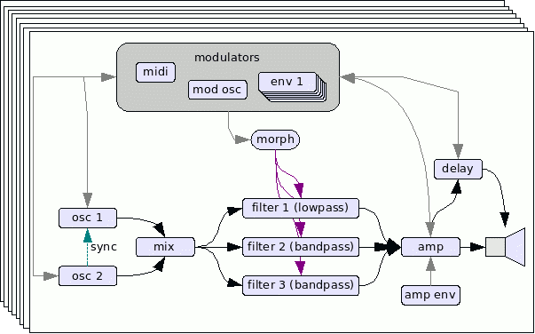

Industrial Grade Digital Synthesizer for Linux
Minicomputer is a standalone Linux softwaresynthesizer for
creating experimental electronic sounds as its often used
in but not limited to Industrial music, IDM, EBM, Glitch, sound design and minimal electronic. It is monophonic but can produce up to 8 different sounds at the same time.
It uses
Jack as realtime audio infrastructure and can be controlled via Midi.
Minicomputer is free open source software distributed under GPL 3 written by Malte Steiner 2007-2009.
Version 1.3 has improved envelope generators and some fixes
update 1.3:
19.January.2009
- fix: envelope generators are now exponential and so more punch
- fix: changed the presets so that they match better
- fix: works now with latest gcc compilers
Projects already using it are
Notstandskomitee
Akustikkoppler
Minicomputer was used for example by Notstandskomitee at
LAC 2008 at the club night 29.2.2008 and shown at
Frankfurter Musikmesse 2008 12.-15.3. at the booth
B66 in
hall 5.1 by
Synthesizer Magazin
Sonic State took a videoride over the booth and Minicomputer is in it:
http://www.sonicstate.com/news/shownews.cfm?newsid=6327
The application is split into 2 programms, the engine written in C and an editor written in C++.
Its brand new so it will take a while until binarys are available in the repositories of your favorite Linux distribution. So most likely you have to compile it on your own which actually means at best, if all librarys are installed on your computer, just typing in
scons from within the Minicomputer directory.
Dependencies includes:
- Jack
- FLTK
- Alsaseq
- pthreads
- liblo
and
Take care, it can be harsh! Use it on your own risk, you have been warnend!
Minicomputer doesn't ape any existing synthesizer but has a rather traditional, subtractive
approach and thus is easy to operate. Its made of 8 parallel voices forming a multitemperal
setup, suited for example as a drumsynth. Each voice is monophonic in itself so it can play
only one key per time, additional triggers might cut off a sound of the same voice which
was already on or fading.
The sound architecture:

Each voice have two oscillators feeding a morphing filter which is made of 3 filters in parallel, creating vivid formants often result in vocal like sound. Each voice includes a complete delay line which can be also modulated by envelopes, oscillators, Midi events etc. Every part is calculated sample accurate so it is
not that easy on the cpu, but on the other hand features a rich sound and synthesis flexibilty. Because the filter can create three resonances, the signal path can be feedbacked on several modulation points and every modulator can reach into audio range, volume differences can occur so take care.
{kind=link}